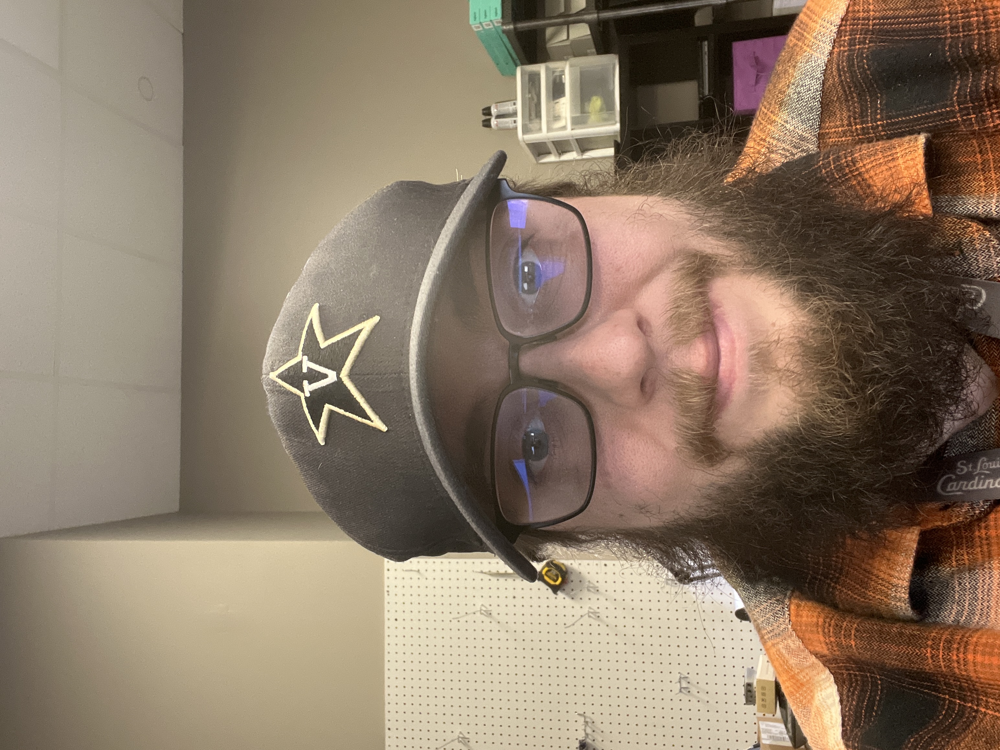

Michael Howard

Contact Me
My Hobbies
Summary:
Customer-service driven employee looking to utilize my skills to help solve
customer-related issues, advocate for changes to ensure top tier experiences,
and to move to a position in which I can become a leader in my field.
Education:
Full Sail University
- Location: Winter Park, FL
- Dates: Sep 2023 - May 2024
- Degree: Associate of Science - Web Development and Design
MU EMS Education
- Location: Columbia, MO
- Dates: Apr 2019 - Jun 2021
- Degree: Certification - Paramedicine
Lewis and Clark Community College
- Location: Godfrey, IL
- Dates: Aug 2015 - Dec 2015
- Degree: Certification - Emergency Medical Technician
Work Experience:
Wisper Internet
- Location: Mascoutah, IL
- Dates: Oct 2022 - Present
- Position: IT Support Specialist
- Duties: Serves as the professional "face" of company’s Helpdesk
and provides first-line troubleshooting, hardware/software resources,
and other assistance to internal customers. Prioritizes tasks based
on urgency, communicate effectively with technical and non-technical
staff, and adapt to meet employees' needs. Contributes and executes
cybersecurity initiatives along with other projects aimed at securing
and improving systems hosted locally, as well as in private and public
clouds.
Air Evac Lifeteam
- Location: O'Fallon, MO
- Dates: Jun 2017 - Aug 2022
- Position: Flight Coordinator I
- Duties: Flight coordinator for air medical services. Fielded emergency
and non-emergency calls in a timely manner and used information obtained
to dispatch appropriate medical crews per requests. Maintained documentation
of all procedures followed. Earned and maintained FAA certifications during
employment for safety of crews and passengers.
Lakeside EMS
- Location: Effingham, IL
- Dates: Dec 2020 - Aug 2021
- Position: Paramedic
- Duties: Maintained exceptional patient care by ensuring medical procedures
were done per standards and procedures, ensured that equipment was kept in
clean and working order, provided care with compassion, used problem-solving
skills to determine proper treatment and level of care needed. Displayed
leadership by ensuring crew was prepared and organized throughout the day.
Skills:
- HTML5
- CSS3
- Javascript
- React.js
- Node.js
- Tailwind CSS
- MongoDB
Additional Information:
Certifications:
Certified in Cybersecurity
Awards:
Valedictorian of Associate Program